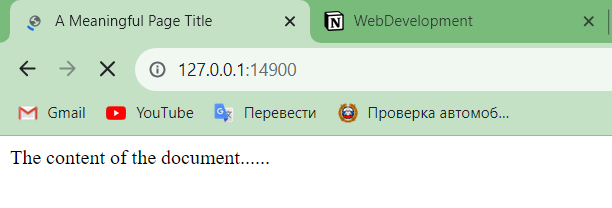

ex3
Упражнение 3
Код
Сервер
import socket
def get_webpage_response():
response_type = 'HTTP/1.0 200 OK\n'
headers = 'Content-Type: text/html\n\n'
with open('index.html') as f:
content = "".join(f.readlines())
response_raw = response_type + headers + content
response_encoded = response_raw.encode('utf-8')
return response_encoded
def main():
conn = socket.socket(socket.AF_INET, socket.SOCK_STREAM)
conn.bind(('127.0.0.1', 14900))
conn.listen(10)
while True:
try:
client_socket, address = conn.accept()
webpage_response = get_webpage_response()
client_socket.send(webpage_response)
except KeyboardInterrupt:
break
conn.close()
if __name__ == '__main__':
main()
index.html
<!DOCTYPE html>
<html>
<head>
<title>A Meaningful Page Title</title>
</head>
<body>
The content of the document......
</body>
</html>
Демонстрация
 Страница, которую получил браузер с сервера